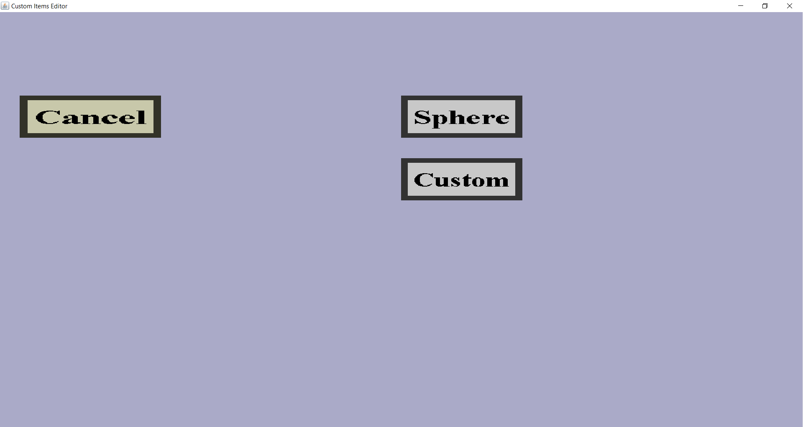

The projectile cover creation menu can be used to create a new projectile cover.
In this menu, you need to choose what type of projectile cover you would like to add.
This menu should look like this:

There should be a 'Cancel' button and a button for each type of projectile cover, which are currently
only 'Sphere' and 'Custom'.
The 'Cancel' button will take you back to the projectile cover overview,
without adding a new projectile cover. The other buttons will take you to the edit menu for the
corresponding projectile cover type. I will describe them briefly:
-
The 'Sphere' button is for making sphere-shaped projectile covers.
These kind of projectile covers have a shape that looks like a sphere and will be drawn around the
custom projectile in-game, which will cause the custom projectile to look like a sphere.
You will be able to make the texture of the sphere.
The corresponding edit menu is the sphere projectile cover edit menu.
-
The 'Custom' button is for making custom projectile covers.
A custom projectile cover only has an item model and a texture, which you will have to make.
The model will slowly rotate around the custom projectile in-game.
The corresponding edit menu is the custom projectile cover edit menu.